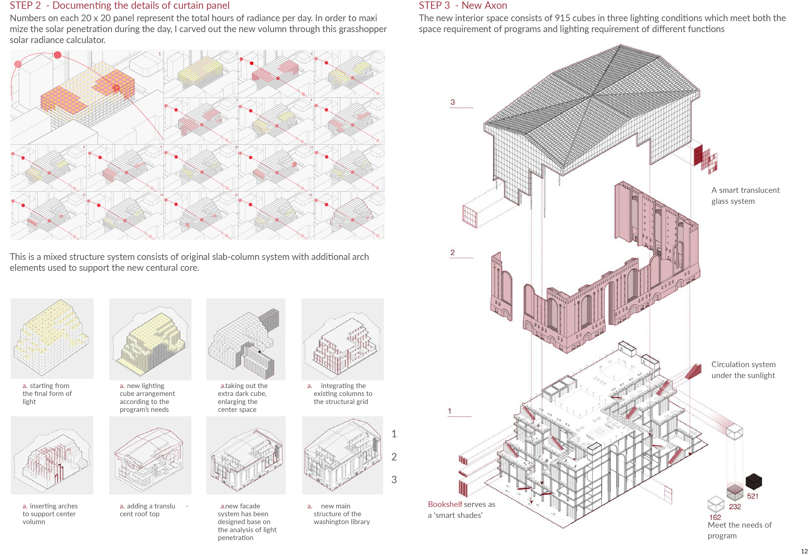

Project Type: Architectural Renovation (Academic work)
Roles: Designer
Team: Individual
Timeline: Fall 2014
Chicago Harold Washington Library has been serving for the entire city as a centural library since it has been built on 1990. The biggest problem of the building is about the natural light. The corrent conclosure structure blocked 94% of natural light on facade. In order to give this popular space a fresh looking and feeling, our design needs to start from solve this problem.
The aim of this project was to inverse the original condition of the Washington library but still preserve the classical quality of its present architecture. Through methodical calculations, we carved out volumes to allow maximum penetration of sunlight through two main cores. To contrast the new and the old, we preserved the residual dim space of the building and carved out a third primary core.
Numbers on each 20 x 20 panel represent the total hours of radiance per day. In order to maximize the solar penetration during the day, I carved out the new volumn through this grasshopper solar radiance calculator.This is a mixed structure system consists of original slab-column system with additional arch elements used to support the new centural core.The new interior space consists of 915 cubes in three lighting conditions which meet both the space requirement of programs and lighting requirement of different functions.
The image below shows the new interior of the library with a group of detailed diagrams on each element.